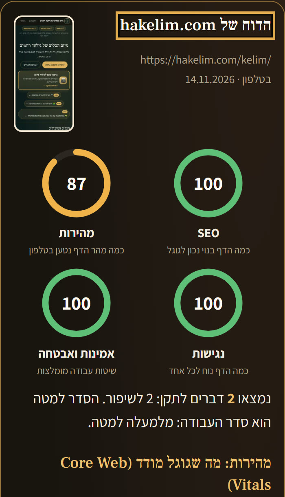
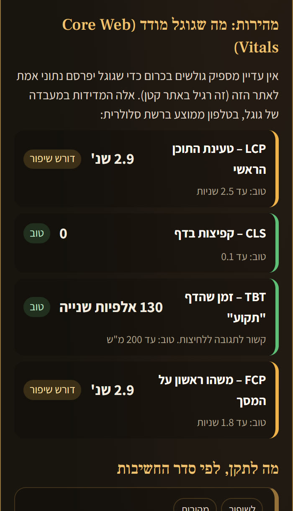
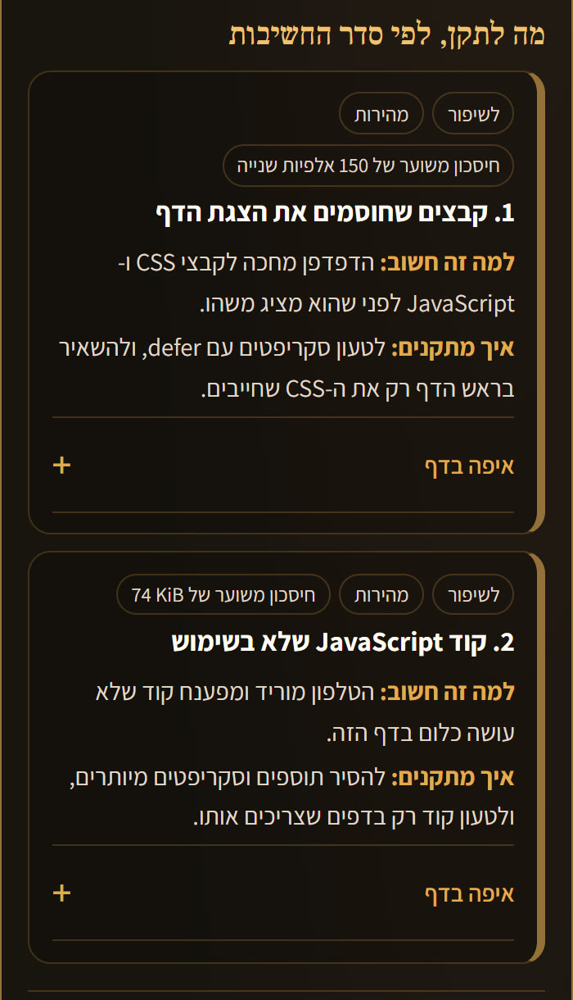

מה גוגל רואה כשהוא נכנס לאתר שלכם – ומה לתקן, בעברית פשוטה, לפי סדר החשיבות. בחינם, בלי הרשמה ובלי מייל.
רוב בעלי העסקים לא יודעים מה גוגל רואה באתר שלהם. במחשב הכול נראה טוב, אבל בטלפון הדף נטען לאט, חסר לו תיאור לגוגל, ונשארו בו דפים מהתבנית. הלקוח מחפש, לוחץ, מחכה – ועובר למתחרה.
מריצה על הדף את הכלי של גוגל (PageSpeed Insights) ומתרגמת את התוצאה לעברית: מה הבעיה, למה היא חשובה, ואיך מתקנים – גם בוויקס ובוורדפרס. התוצאה מגיעה אחרי 20–60 שניות.



הבדיקה באתר בודקת דף אחד בכל פעם. אפשר לבקש ממני סריקה של כל האתר, עד 50 דפים: כותרות ותיאורים חסרים או כפולים, קישורים שבורים, דפים שאין אליהם קישור, דפים חסומים לגוגל, מפת האתר ותמונות בלי תיאור – בדוח מלא בעברית, לפי סדר החשיבות, עם הערכה כמה עבודה יש בכל תיקון.
זה מיזם חסד – לא השקעה, לא רכישה ולא מנוי. בכל מדרגה: כל מה שכתוב בה ייעשה, עם דוח לפני ואחרי. אתר גדול מ-50 דפים או בקשה מיוחדת – נדייק יחד. גילעד כאן כדי לדייק לכל אחד מה יהיה מושלם עבורו.
במיזם יש כלים לכל תחום, ובהם לעסקים: יוצר קוד QR מעוצב, תפריט דיגיטלי, מודעת מבצע לסטטוס, רשימת תפוצה אישית בווטסאפ ובמייל, וצ'ק-ליסט לפתיחת עוסק. הכול בחינם ובלי הרשמה: hakelim.com/kelim
אני גילעד רחמים. נפצעתי קשה במלחמה, בחאן יונס, ומאז אני בונה את הכלים האלה לבד – באהבה ובחסד. אני עושה את זה כדי שכל עסק קטן יקבל עזרה טובה בחינם, גם מי שאין לו תקציב לחברת שיווק. אשמח להיות כאן בשבילכם.
ליצירת קשר: 058-4049049 (ווטסאפ)